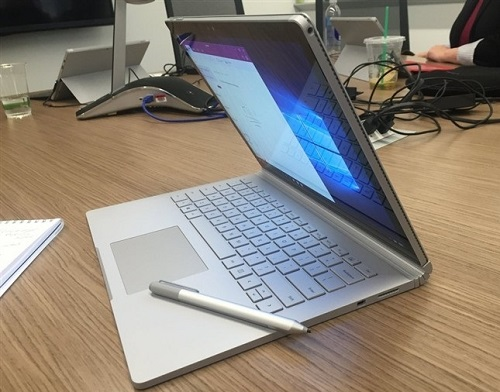

Yüksek özellikli bir dizüstü bilgisayar aramýyorsanýz ve ayný zamanda tablet seviyorsanýz, Microsoft'un Surface Book modeli mükemmel bir seçim olacaktýr.
Microsoft'un ilk dizüstü bilgisayarý Microsoft Surface Book 'u tanýtmasý ile bu yýl kafalar karýþtý. Peki bu bilgisayarý özel kýlan nedir? Bilgisayarýn hafif olan ekraný tablet halinde ayrýlabiliyor. Ve Microsoft Surface Book'un bazý modellerinin klavye tabanýna özel, oyun ve video düzenleme için grafik birimi dahil edilmiþ. Microsoft, bu bilgisayarlarýn Apple MacBook Pro gibi bilgisayarlardan iki kat daha güçlü olduðunu söylüyor.

Fiyatý: 8.499,00 TL